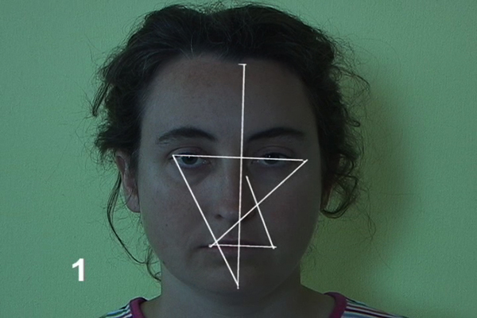
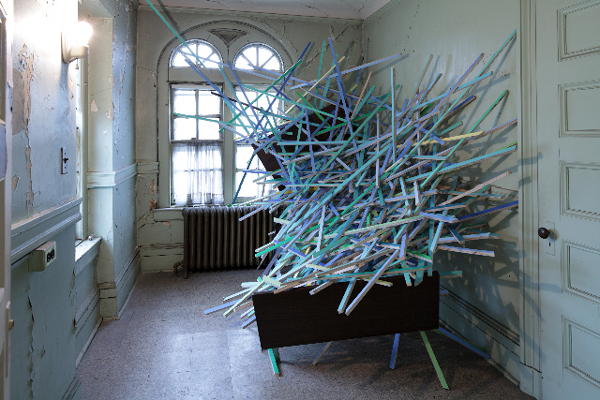
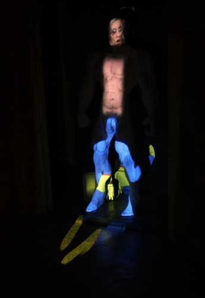

-
Ecstatic at St. Ceilia’s
by Daniel Pearce March 17, 2010
The former convent of St. Cecilia’s Parish—the enduring Roman Catholic parish was itself founded in 1872—is the fascinating site of the Round Robin Collective’s current group exhibition, ECSTATIC. The convent, which is nestled in a pocket of south Greenpoint remote from the subway, stopped accommodating nuns only recently, when their numbers dwindled to the point that such large quarters were no longer practical. The parish has since been remarkably open to re-purposing the space, having hosted a smattering of art shows and their attendant events (the father was rumored to have enjoyed ECSTATIC’s opening reception), but the building’s original intentions remain apparent.
The Brooklyn-based Round Robin Collective fills this unique space as cleverly as it can, with some of the participating artists explicitly addressing the convent’s history (its “sacrosanct aura,” in the words of the press release) and others finding idiosyncratic ways to situate non-site-specific works within the former bedrooms, closets, and fireplaces. The show is organized around “notions of ecstasy;” moments of “mental transport and rapture,” and the artists enjoy the etymological ambiguity of the word “ecstasy,” here understood (in what feels to me like a canonical OED entry) as “outside of the self.” Inside the convent walls, the connotations of “ecstasy” are obviously religious, but, upon entering, it’s immediately difficult to imagine any vibrant notion of “ecstasy” being achieved within the austere, dilapidated space. The dusty, institutional quality of the building instead makes the shriveled and monkish asceticism of nunnery clichés much easier to imagine.
Though the convent, with its small, serviceable gallery rooms and an inscribed history affords artists opportunities similar to those offered by a space like P.S.1, the convent’s un-rehabilitated appearance and retention of original details make it sui generis. I first visited St. Cecilia’s on a bleak Saturday just after ECSTATIC’s opening—the rain was unrelenting and the general wetness in the air seemed to pucker the cracked paint of the entry hallway. That hallway led me to a low-ceilinged chapel where the pews had been cleared aside and aggregated beneath a stained glass of the Virgin, creating a small staging area on the linoleum floor. A number of exciting events—multiple screenings, a collective sewing session, a panel discussion about alternative art spaces in New York, a cooking demonstration, and a potluck—are set to take place here during the coming weeks, all as part of the Collective’s fittingly communitarian program.
The first piece I saw was Katherine McInnis’s video piece, Threshold, which is installed in the only window of a tiny darkened room just off of the chapel. The monitor blocks the view from the window, substituting a battery of images that look at once like a slideshow and stop-motion animation. Threshold looks at and, when possible, through every window on the premises, surveying all views available from within the convent, mapping a dreary, curtailed sense of the outside. McInnis focuses on the textures that make the distressed windows opaque—paint, scratches, darkness— making it difficult for the viewer to envision any escape, nevermind an ecstatic one.
Martin Esteves’s Come to Mock, Stay to Rock fills the neighboring room as only a five-foot-tall phallus wrapped in black electrical tape could. His sculpture is flanked by two modest, wall-bound sculptures—Audra Woloweic’s pair of effaced vinyl records, which I particularly liked, and Lisa Boumstein-Smalley’s black Plexiglas panels. Yet Come to Mock… is intended, according to the artist statement, to enter the viewer’s consideration only when she backs into it and is thus shaken from contemplation of either Boumstein-Smalley’s or Woloweic’s work. This intention is both implausible (I couldn’t have ignored the presence of the piece if I tried) and delightfully hostile to ECSTATIC’s premise (Esteves’s piece sets out to disrupt the viewer’s ecstatic reverie by physically intruding upon her apprehension of other artworks). When staging this reverie-disrupting collision, I noticed that Esteves’s monolithic sculpture is wobbly and has a sponge-like receptiveness to touch, much like a fine-art punching bag.
Some of the original decorations still adorn the corridors of the convent: I found a still-life and, a few feet away, a framed piece of pious verse set against a background of watercolor. Because the building’s raw interior brims with interest, and because there are artworks tucked away in all manner of obscure pockets, I developed an inquisitive urge to go off-road, to locate areas that either hosted a quiet cache of art or were unclaimed altogether. Across from the wall-poem are the stairs to the basement, which had apparently channeled the excess attendees of the previous night’s reception. There are no works installed downstairs, but it is still an important tier of the self-directed experience, especially for those eager to imagine how some nuns lived. There is a large kitchen, wallpapered in rose-print, and during my visit its half-length linen curtains were drawn to expose an eye-level stretch of sidewalk getting a drenching. A vestige from an earlier exhibition is still emblazoned on one wall, reading “the mountains that make up the coast are full of tall pine trees and small ferns”; in one room, atop a floor protected by butcher paper, I encountered a crowded index of wardrobes, and a few cases of energy drink; the laundry room still has a washer, dryer, and industrial sink, but it is dark and musty, arguably the building’s eeriest place.
When I returned to the first floor and made my ascent to the second, the rain had created a leak in the building’s skylight and the consequent drip was being caught by a plush sculpture suspended in the stairwell. I entered the living room, where a sofa and coffee table face a fireplace that has been retired but reanimated with a light sculpture. If the works on the first floor deal with “ecstasy” as a somewhat cerebral proposition, the second floor living room explores the more jubilant, less ponderous qualities of the term. These works are steeped in a sort of ultraviolet trippiness, possibly the result of an unhinged free-association with “ECSTASY!!!” as its prompt. Though I was vexed by the inclusion of a few pieces, Matthew Spiegelman’s Untitled (saddest smile) is one that, despite its Day-Glo cast, truly belongs to the setting. His sculpture features light fixtures (all of which seem to have been taken from the overheads of the convent’s bedrooms) arranged in a smiley-face formation, with their bulbs awakening unpredictably. The room is illuminated from above by loud fluorescents, which give Spiegelman’s sculpture little influence over the overall quality of light— making his piece a relief, which I liked. Were the delirious lights more potent, the ecstasy induced might be unbearable.
In an adjacent former bedroom are Stephanie Liner’s photo series Momentos of a Doomed Construct. At first, they appear more interested in a sort of passive, pre-ecstatic state. The female subject of Liner’s portrait series is, in certain ways, not yet fully a subject, as she rests within an ersatz womb lined with the vaguely Victorian fabric that constitutes her dress. How does one experience the necessary rupture of ecstasy, the flight from self, without having completed gestation? Though Liner’s subject is confined to this ornate, padded cell, complete with porthole, there is no urgent sense of claustrophobia. I examined the red print of the textile for some time, its birds, flowers, and butterflies, and then I looked out the window onto the plot of soil below, muddied by heavy rain, surrounded by a chain-link fence. My eye stopped upon a small, wet pyramid made of pebbles. The grounds were strewn with felled trees, which had been gathered into three dampened piles; one pile lay next to a rusting trellis. It was a melancholy pleasure to have a warm respite indoors—could I be experiencing the sort of adult sensation that compels one into a padded womb? Did I just feel a momentary pang of the ecstasy Liner is interested in? Maybe I was the one suffering from a case of the rainy-day teleological confusions, but alas, it could just be that I am male, gazing at this padded, circumscribed space from an open room with hardwood floors.
Janos Stone’s I Never Thought I Would Meet Someone Like You, located at the other end of the hallway, explores an ecstasy patently prohibited in a convent, and was among my favorite pieces in the show. Relegated to a small closet is a sculpture of a nude male, almost three feet tall, Herculean, anonymous, well-endowed, with a wispy tangle of pubic hair made from hot glue. Three discrete sets of images are projected upon different regions of this tabula rasa, resulting in a sort of “exquisite corpse” by way of Tony Oursler. The faces of male and female porn stars, all contorted with requisite glee, are cast across the sculpture’s face; an under-exercised, heavily breathing male torso is projected onto the sculpture’s body; at the bottom is a projection of a shape-shifting Second Life figure, bright blue and yellow. Everything about the piece feels anachronistic and inappropriate in this context, from the VR imagery to the naked man that doubles as a screen. Chaste visitors should be thankful that Stone has installed his piece in the closet of one of the more marginal rooms, lest they be confronted with his blasphemous specter of pornographic orgasm.
I also loved Mary Billyou’s Subspace Face, a video loop in which the artist’s face remains still while a simple matrix is superimposed upon it. As the face slowly recedes, the video offers a holistic interval, the intersection of a simple, platonic form and a very human face. Gisela Insuaste’s site-specific sculpture, Suenos en mi cama, dreams in her bed (dreams in my bed, dreams in her bed)—a chaotic latticework of wood shards, all culled from the premises, overflowing from a broken bedframe—was a total surprise to me. Despite its muted colors, the piece feels brittle and confrontational.
Collectively, ECSTATIC accomplishes its two main objectives extremely well. I left the show with an overstuffed-yet-vague idea of ecstasy, of an expansive, heterogenous, personal, remote, religious, transgressive, and ultimately elusive thing. Most exciting, however, is how vividly dramatized the setting is. Many pieces (and, if you’re lucky, a severe rainstorm) find thrilling ways to emphasize both the religiosity and the decrepitude of the space. The former quarters of the Roman Catholic priesthood, now mired in scandal, would have been much harder to sentimentalize (and would doubtfully have yielded such sympathetic contributions from artists); the sisterhood is a much different story.

{kind=link}
{kind=link}
{kind=link}